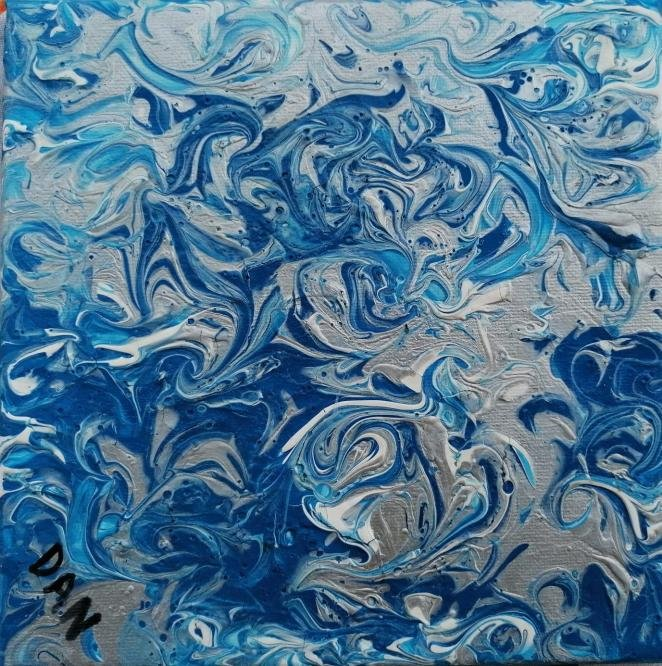
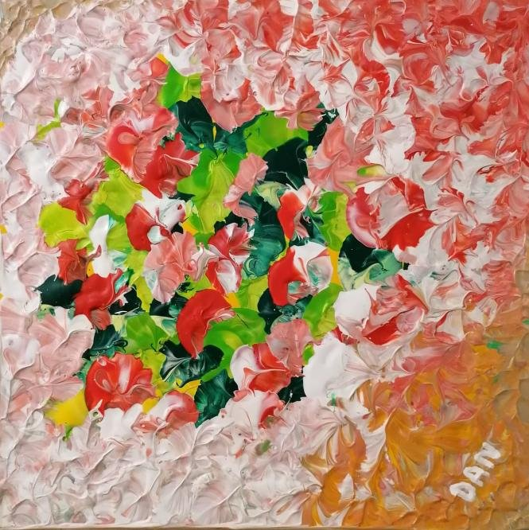
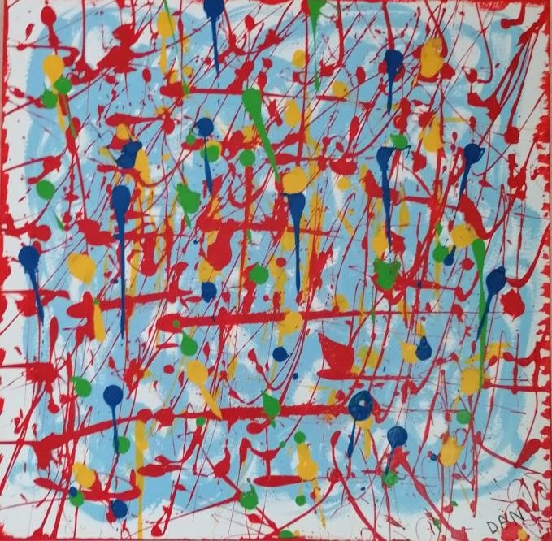

Racines et mémoire
Sept navires jusqu'à Ouidah.
Claudine Dan est née à Ouidah, au Bénin — une ville dont l'histoire porte, encore aujourd'hui, la mémoire de la traite transatlantique.
Sa démarche artistique s'inspire de la culture de ses ancêtres. Elle est devenue, pour elle, « un combat spirituel pour la paix des âmes de ses aïeux impliqués dans la traite transatlantique, dans l'esclavage. »
Des toiles peintes en France ont été transportées par sept navires différents jusqu'au port de Cotonou, puis acheminées à Ouidah — « une manière de ramener les âmes des victimes, hommes, femmes et enfants de l'esclavage, au bercail. »
Elles ont été exposées à l'Hôtel Djégba, à Ouidah, à proximité de la Porte du Non-Retour — le site par lequel des centaines de milliers de personnes réduites en esclavage ont quitté l'Afrique de force, sans jamais revenir.
Chaque œuvre de cette série a fait ce voyage.






« Un geste pour la paix des âmes de ses aïeux. »
Retour au voyage